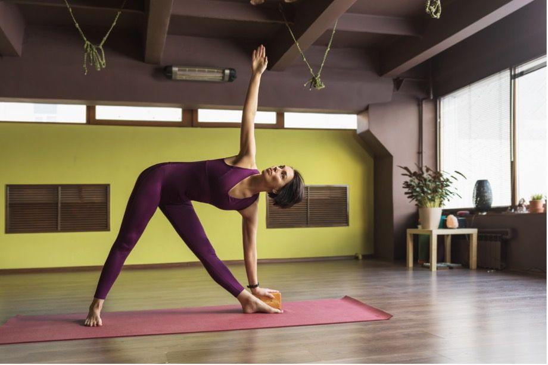
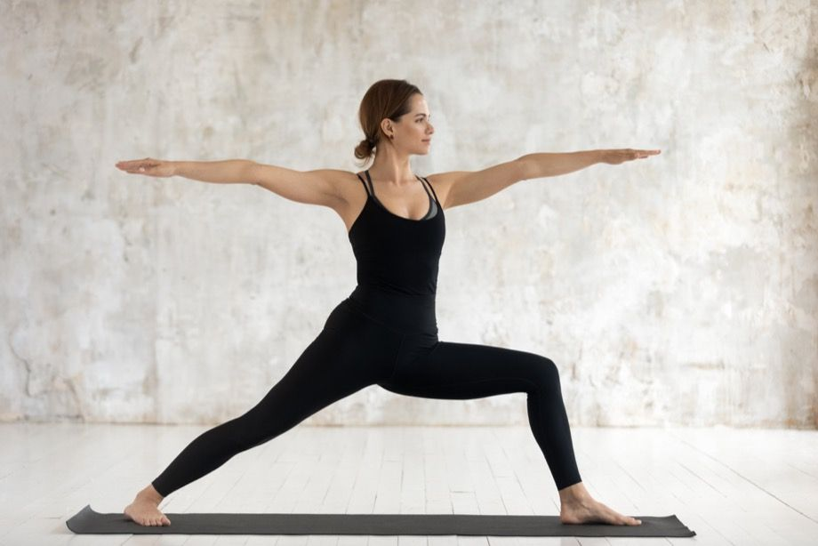
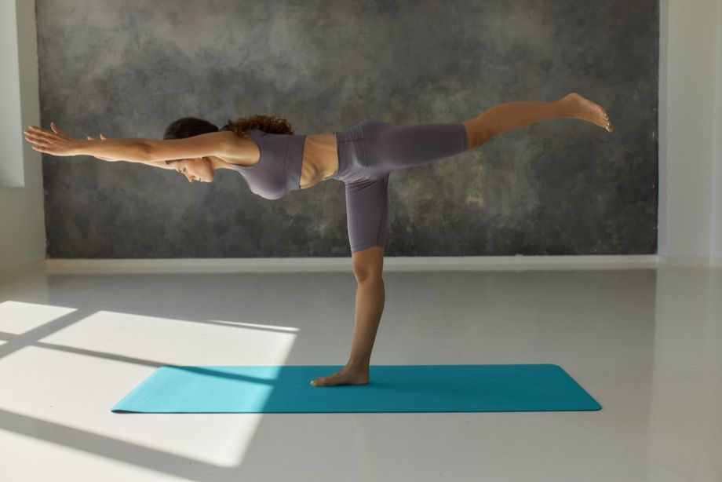

.jpg)
- 🧘 Встаньте прямо. Правую ногу согните в колене и поставьте стопу на внутреннюю поверхность левого бедра. Стопа может быть как выше, так и ниже колена.
- 🧘 Руки согните и соедините ладони перед грудью.
- 🧘 Важно с самого начала найти точку опоры, чтобы сохранять равновесие в дальнейшем.
- 🧘 Глубоко дышите в таком положении.

- 🧘 Поставьте ноги широко, носок левой ноги развёрнут и смотрит в сторону. Ноги прямые.
- 🧘 Из этого положения наклоните корпус влево так, чтобы правая рука смотрела вверх, а левую руку положите на левую ногу ближе к стопе. Старайтесь максимально раскрыть грудную клетку.
- 🧘 Задержитесь в этом положении и глубоко дышите.

- 🧘 Поставьте ноги широко в стороны, левую разверните так, чтобы колено смотрело вперёд. Правой крепко упритесь в пол.
- 🧘 Согните левое колено под углом 90 градусов, руки разведите в стороны, взгляд должен быть направлен прямо. Живот подтянут.
- 🧘 Задержитесь в таком положении, сделайте несколько глубоких вдохов и выдохов.

- 🧘 Выйдите из предыдущей асаны, поставив ноги поближе друг к другу. Оттолкнитесь правой ногой, оторвите её от пола и начните балансировать на левой. Сначала она может быть немного согнута, чтобы проще было найти точку опоры.
- 🧘 Напрягите ягодицы и вытяните правую ногу назад. Руки могут быть вытянуты как в стороны, так и вперёд.
- 🧘 В таком положении глубоко дышите.